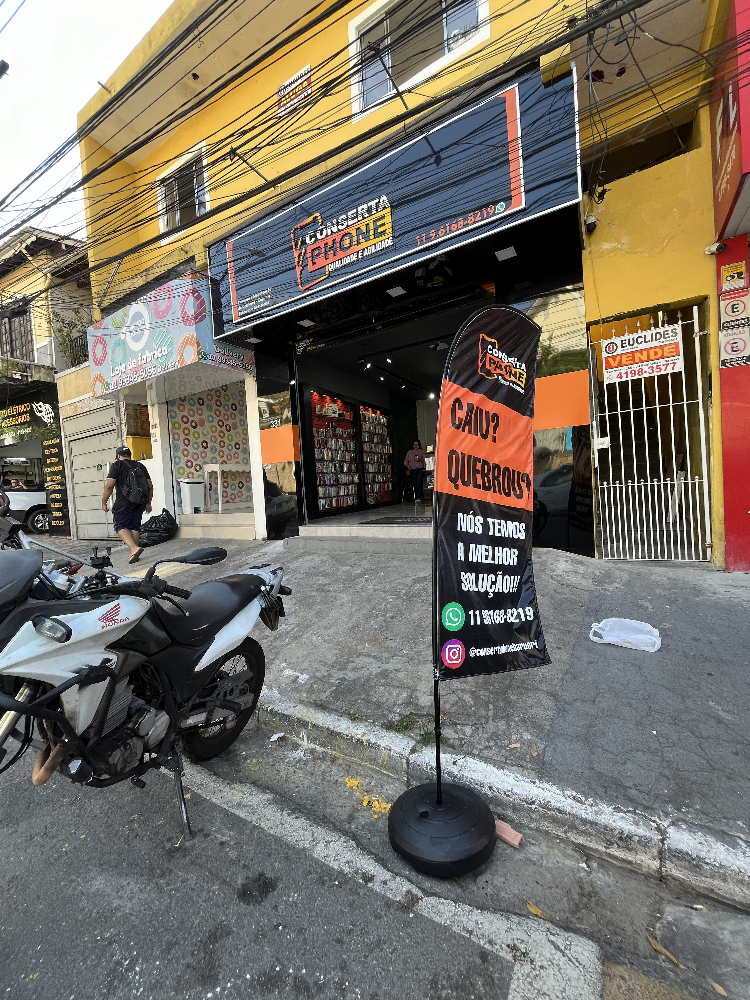
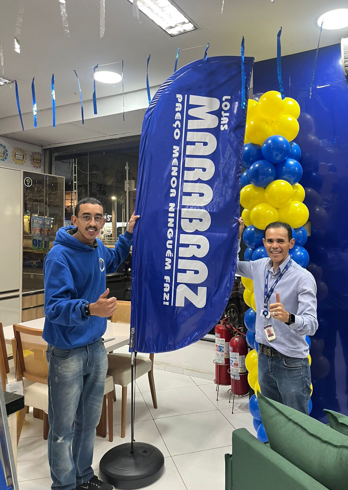
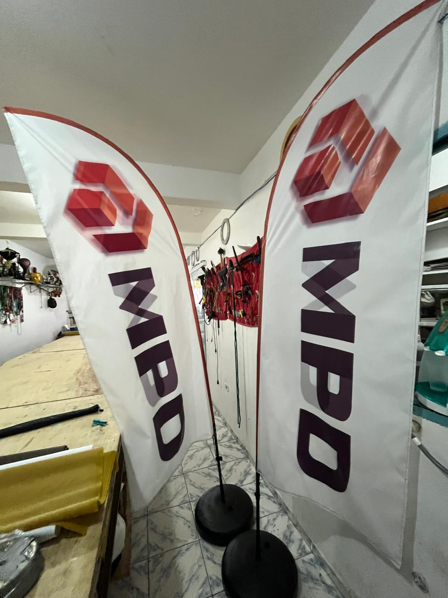

Wind-Banner Completo
Arte Gratuita*
Atendimento Rápido
...E a melhor qualidade de impressão!
O que nossos clientes falam

"Outra fabricante me deixou na mão, mas o Eduardo da LibraCOM me salvou as 23h30 da noite, nós fizemos a arte e as 09h00 do outro dia já estava com o meu wind-banner completo, montado, estou muito satisfeito de ter conhecido essa empresa, virei cliente"
- Daniela A. - O Boticário

"Estou muito satisfeito com o serviço da LibraCOM em Barueri! A entrega do wind banner foi extremamente rápida e a qualidade da impressão no tecido Stargloss é excepcional, com cores vibrantes e detalhes nítidos. O acabamento das costuras é impecável, com reforços que garantem durabilidade. Realmente, um produto de primeira linha que superou minhas expectativas! Um agradecimento especial ao José Eduardo da LibraCOM pelo atendimento excelente e personalizado."
- Leonardo A. - Cliente Celular Fone


"A equipe da LibraCOM em Barueri é fantástica! Eles entenderam exatamente o que precisávamos para nossa campanha publicitária e entregaram banners de altíssima qualidade. A comunicação foi excelente do início ao fim. Obrigado, José Eduardo, pelo serviço impecável."
- Gilberto M. - Marabraz
"Recebi meus wind banners modelo reto para a campanha e estou super satisfeito! Ótima qualidade, super econômico, e ainda chegou rapidinho. Ideal para quem quer visibilidade na campanha sem gastar muito. Entrega rápida em SP e Brasil todo. Recomendo demais!"
- André, Assessor Vereador Fernando.jpeg)
.jpeg)